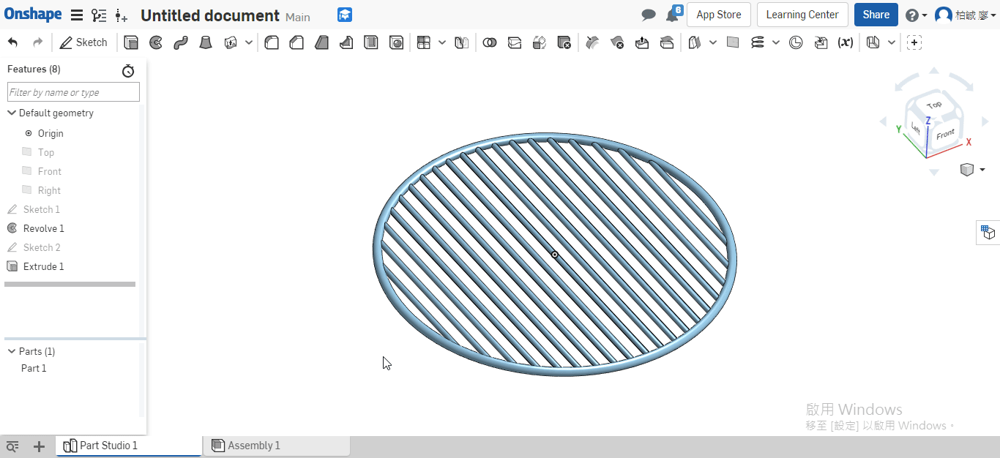
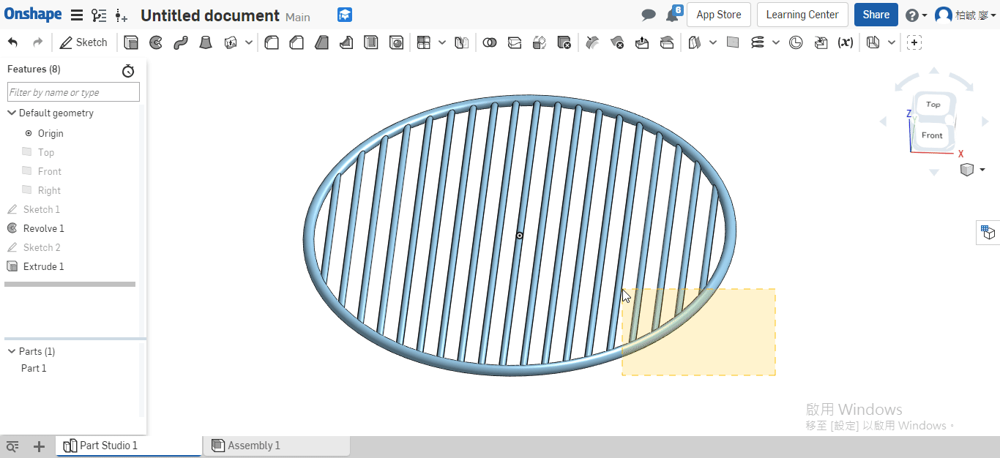

課程內容1 << Previous Next >> lesson-week2
Week 1 Assessment
- What’s the quickest way to learn more about each feature in the toolbar?
(什麼是最快的方式了解工具欄的所有功能)
Hover the mouse over it for a second, and a description of the feature will pop up.
(將鼠標停在上面一秒，並彈出該功能的說明)
- Briefly describe the four foundational features. Feel free to draw pictures if it helps:
(簡要描述四個基本特徵，可以隨意畫製圖片幫助說明)
Extrude(擠出): This geometry is created when a constant cross section is extruded in astraight direction:(沿著直線方向擠出恆定橫截面)
Revolve(迴轉): This geometry is created when a constant cross-section is revolved around an axis of revolution.(恆定的橫截面圍繞旋轉軸旋轉)
Sweep(掃掠): This geometry is created when a constant cross-section is swept along a path(沿著路徑掃出恆定橫截面)
Loft(混成): This geometry is created when multiple cross sections are smoothly connected together.(多個截面平滑地連接在一起)
- What is the default geometry in a Part Studio?
(Part Studio中的默認幾何體是什麼)
The origin and three orthogonal planes: Top, Front, Right
(原點和三個正交平面：上視，前視，右視)
- What’s the difference between a box select from Left-to-Right and a box select from
Right-to-Left?
(從左到右框選和從右到左框選有什麼區別)
L-R = selects everything within the box(選擇框選內的所有內容)

R-L = selects everything the box touches.(選擇框選接觸的所有內容)

- Can a document in Onshape have multiple Part Studios?
(Onshape中的文檔可以有多個Part Studios嗎)
Yas.
課程內容1 << Previous Next >> lesson-week2